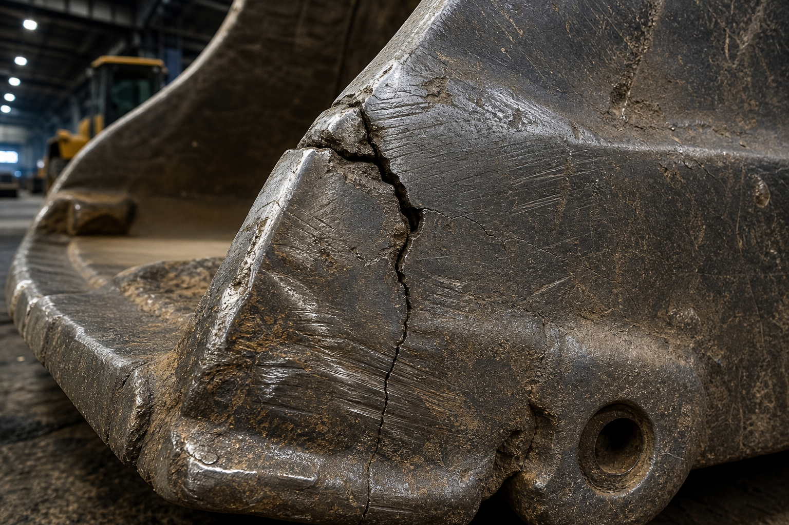

Introducción y Contexto
El Desafío Estructural
- Entorno Operativo: Operación en minería subterránea bajo abrasión extrema e impactos contra roca fragmentada.
- Objetivo del Informe: Identificar propiedades mecánicas de metales y polímeros que componen el equipo LHD.
- Relevancia: Comprender la relación de "Cargas y Deformaciones" para predecir fallas, seleccionar aleaciones y evitar detenciones.
.png)
Tren de Potencia y Rodado LHD
4. Análisis Crítico y Propuestas de Mejora

Evidencia: Fisura Estructural
Falla 1: Fisuras por Abrasión
La fricción adelgaza la plancha (desgaste abrasivo). Los impactos superan la fatiga generando propagación de grietas.
💡 Mejora Metalúrgica:
Implementar Planchas Bimetálicas de Carburo de Cromo en zonas de roce (Alta dureza protege el acero base estructural).

Evidencia: Desgarro por Cizalle
Falla 2: Desgarro por Cizalladura
El torque severo sobre rocas afiladas supera la resistencia a la tracción del elastómero, desprendiendo material.
💡 Mejora Estructural:
Transición a compuestos L-5S (Minería Severa) de paredes reforzadas, o adopción de cadenas de protección forjadas.
Cargador LHD - Análisis de Materiales